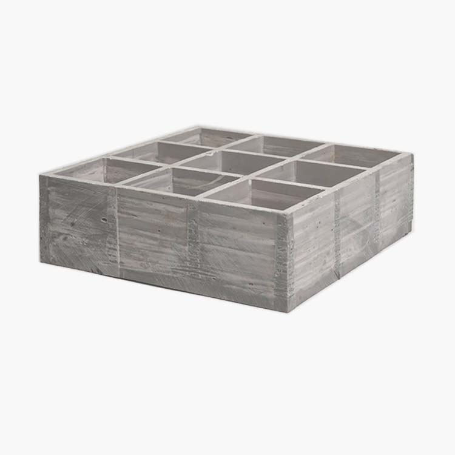

Anti-slip FRP grating surfaces
Anti-slip FRP grating with grit surface for maximum traction in wet, oily, or industrial environments.

Product Description
Anti-slip FRP grating features a grit or abrasive surface layer bonded to the top of the grating for maximum traction in wet, oily, chemical, or high-traffic environments. The grit surface significantly improves slip resistance compared to smooth FRP and is ideal for stairs, ramps, platforms, and walkways where safety is critical. Available in molded construction with various mesh sizes and resin types. Corrosion-resistant and low maintenance.
| Specification | Details |
|---|---|
| Surface | Grit or abrasive top layer for enhanced slip resistance |
| Typical environments | Wet, oily, chemical, outdoor, high-traffic areas |
| Applications | Stairs, ramps, platforms, walkways, chemical plants, marine |
| Resin types | Polyester, vinyl ester for chemical resistance |
| Benefits | High slip resistance, corrosion-resistant, lightweight, low maintenance |
| Construction | Molded FRP with grit surface; integral or bonded |
Anti-slip FRP in the field
Data centers
Outdoor stepovers and washdown pads where metallic corrosion products are undesirable.
Power generation
Cooling tower perimeter maintenance paths with mist and algae growth.
Oil & gas
Marine terminal approaches and berth maintenance where gritted tops improve barefoot or boot traction.
Related
Specify grit system and resin together
Grit bond durability depends on resin and exposure. Pair with molded FRP or pultruded layouts per loads.
Frequently asked questions
Does grit reduce open area?
Slightly; confirm drainage if important.
Cleaning?
Pressure washing may require grit retention checks.
Replacement interval?
Depends on traffic and chemical exposure.
Colors?
Often available for safety zoning.
Steel alternative?
Compare to serrated steel for high wheel loads.
Need a quotation?
Send mesh size, thickness, resin type, panel dimensions, quantity, and project requirements.